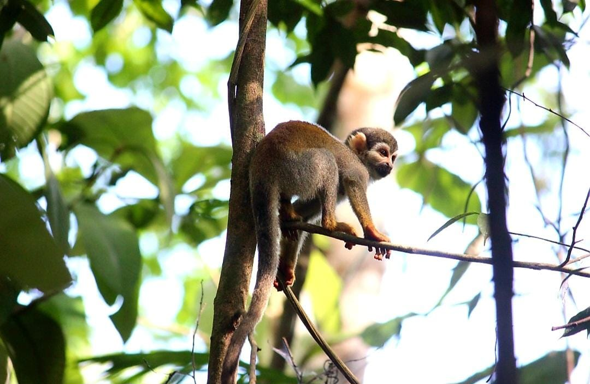

Sobre a Trilha
A Trilha Ecológica Saimiri oferece uma experiência singular imersa na natureza exuberante da região amazônica. Com seus 600 metros de extensão, a trilha guiada proporciona uma oportunidade ímpar para conectar-se com a biodiversidade única desta área. Localizada no fundo de uma Área de Preservação Permanente (APP), que abriga a nascente do Igarapé da Vovó, a APP é administrada pelo Instituto Federal do Amazonas - Campus Manaus Distrito Industrial. A Trilha Ecológica Saimiri representa um projeto de conservação e educação ambiental de suma importância. Durante uma visita à trilha, os visitantes têm a chance de avistar espécies da fauna ameaçadas de extinção, como o macaco-de-cheiro (Saimiri sciureus L.), além de inúmeras outras espécies que habitam esta rica biodiversidade.
Atualmente, a Trilha Saimiri é utilizada principalmente para fins de pesquisa acadêmica. O monitoramento da qualidade da água, temperatura, umidade, nível de CO2, entre outros aspectos ambientais relevantes, é fundamental para a compreensão e preservação do ecossistema local. A Dra. Ana Lúcia Soares Machado é a principal responsável por este projeto pioneiro, destacando-se por sua dedicação à preservação, conservação e educação ambiental relacionadas à Trilha Saimiri.
Além de ser um local de pesquisa e conservação, a trilha também serve como um espaço para sensibilizar e educar o público sobre a importância da preservação da floresta amazônica. Diversas atividades educativas são realizadas regularmente, incluindo palestras, workshops e trilhas interpretativas, que permitem aos visitantes aprenderem mais sobre a riqueza e fragilidade desse ecossistema único. A Trilha Ecológica Saimiri é, portanto, muito mais do que um simples caminho na floresta; é um portal para a descoberta, a aprendizagem e o engajamento com a natureza, oferecendo uma experiência enriquecedora para todos os que têm o privilégio de explorá-la.
Fotos da Trilha

Animais Encontrados
Neste tópico, é possível observar alguns dos inúmeros animais encontrados na Trilha Ecológica Saimiri, que desempenham papéis vitais no equilíbrio ecológico da Área de Preservação Permanente (APP). Cada espécie encontrada aqui contribui para a manutenção da biodiversidade e da saúde do ecossistema local.
O Jacaré Tinga (Caiman crocodilus) é uma das espécies emblemáticas da APP. Este jacaré, de pequeno porte, é crucial para o controle das populações de peixes e pequenos animais aquáticos. Além disso, ele desempenha um papel importante na estruturação e manutenção dos habitats aquáticos, que são essenciais para outras espécies da fauna local.
O Macaco-de-Cheiro (Saimiri sciureus) é um primata bastante comum na região amazônica e também na Trilha Saimiri. Conhecido por sua agilidade e comportamento social, este macaco desempenha funções ecológicas importantes, como a dispersão de sementes e a manutenção da estrutura das florestas. Sua presença indica um ambiente saudável e equilibrado.
Os embuás, conhecidos cientificamente como Atelidae, são primatas que também habitam a área da APP. Eles são essenciais para a dispersão de sementes e para a regeneração das árvores, contribuindo significativamente para a estrutura da floresta. A presença dos embuás na trilha é um indicativo da riqueza e da complexidade do ecossistema local.
A cigarra é outra espécie fascinante encontrada na Trilha Ecológica Saimiri. Embora pequena, a cigarra desempenha um papel importante no ecossistema, principalmente na regulação da população de insetos e na contribuição para a decomposição de matéria orgânica. O canto característico das cigarras também é um importante indicativo da saúde do ambiente, pois a sua presença está geralmente associada a áreas com vegetação densa e saudável.
Estudar e conservar essas espécies é fundamental para garantir a preservação da biodiversidade e o funcionamento saudável dos ecossistemas na Trilha Ecológica Saimiri. Cada animal encontrado é um elo vital na cadeia alimentar e na estrutura da floresta amazônica.

Visitantes
Por meio do projeto "Trilha Ecológica Saimiri - Ferramenta de Educação Ambiental", inúmeras escolas tiveram a oportunidade de conhecer e explorar a trilha, ampliando seus conhecimentos sobre o meio ambiente e a importância da conservação. Este projeto foi fundamental para despertar o interesse e a responsabilidade ambiental nas novas gerações.
As visitas foram guiadas por uma equipe dedicada e altamente capacitada. O Kelisson Diniz, aluno do curso de Engenharia de Controle e Automação, e o David Bruce, aluno de Pós-Graduação em Meio Ambiente e suas Tecnologias, foram dois dos principais guias que compartilharam seu conhecimento e entusiasmo com os visitantes. Além deles, os alunos dos cursos integrados de nível médio do IFAM também participaram ativamente, proporcionando uma visão enriquecedora e dinâmica da trilha.
A coordenação do projeto esteve sob a liderança da Dra. Ana Lúcia Soares Machado, cuja dedicação e experiência foram essenciais para o sucesso do programa. A Dra. Ana Lúcia foi uma figura central na organização e na execução das atividades educacionais, garantindo que cada visita oferecesse uma experiência significativa e educativa.
O engajamento com a comunidade e a promoção da educação ambiental foram fundamentais para a conservação da Trilha Ecológica Saimiri. Através dessas visitas guiadas, buscamos não apenas educar, mas também inspirar todos os participantes a se tornarem defensores ativos da preservação ambiental.
Contatos
Para mais informações sobre a Trilha Ecológica Saimiri, entre em contato com o Instituto Federal do Amazonas:
E-mail: dipexpi_cmdi@ifam.edu.br
Telefone: (92) 8508-5389